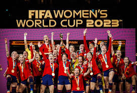

El Mundial Femenino (2023)
La Copa del Mundo obtenida por la selección española femenina de fútbol en el Mundial de Australia y Nueva Zelanda 2023 no solo supuso el primer título mundial absoluto en la historia de la categoría nacional, sino que transformó la mentalidad del deporte femenino en nuestro país, demostrando que España podía alcanzar el Olimpo del balompié superando una durísima crisis institucional previa y una inmensa presión mediática.
- El Camino Perfecto (tras el tropiezo): España firmó una trayectoria de superación encomiable; tras golear a Costa Rica y Zambia en la fase de grupos, encajó un durísimo e inesperado correctivo ante Japón (4-0). Lejos de hundirse, el equipo reaccionó con una madurez futbolística arrolladora en las eliminatorias directas para destrozar a Suiza (5-1) y derribar con oficio y épica en las prórrogas o tramos finales a las potencias de Países Bajos (2-1) y Suecia (2-1).
- Épica en el Estadio de Sídney: La gran final se disputó el 20 de agosto de 2023 ante más de 75.000 espectadores en Sídney. En una batalla de alta tensión táctica contra la campeona de Europa, Inglaterra, la guardameta Cata Coll dio una tremenda seguridad bajo palos y la lateral Olga Carmona desató la locura colectiva en el minuto 29 al cazar un balón en carrera y cruzar un disparo raso e inapelable para anotar el definitivo 1-0.
- La Generación de Oro: El equipo estuvo dirigido por Jorge Vilda en el banquillo, pero el protagonismo absoluto recayó en una hornada irrepetible de futbolistas dotadas de una excelsa calidad técnica. El bloque se consagró en torno a la jefa de la zaga Irene Paredes, la polivalencia de Jenni Hermoso, la velocidad eléctrica de la joven Salma Paralluelo y, por encima de todo, el timón de Aitana Bonmatí, quien completó un torneo superlativo que la coronó como la indiscutible MVP de la Copa del Mundo.
- Máxima Eficacia: La selección se caracterizó por su fidelidad innegociable a la posesión del balón, el juego asociativo en campo rival y una pegada coral devastadora. El conjunto español terminó el campeonato como el equipo más goleador de la cita mundialista, con un tridente de arietes estelares formado por Aitana Bonmatí, Jenni Hermoso y Alba Redondo, quienes anotaron 3 goles esenciales cada una a lo largo del certamen.
- La Identidad: Este trofeo colocó la primera e histórica estrella sobre el escudo de la selección femenina, situando a España en el selecto club de países que poseen la Copa del Mundo tanto en modalidad masculina como femenina. Rompió definitivamente las barreras de visibilidad del fútbol femenino nacional, transformando la resiliencia en una energía ganadora y sentando las bases competitivas de un respeto mundial eterno.
